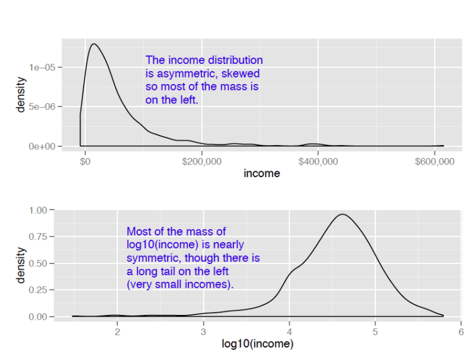
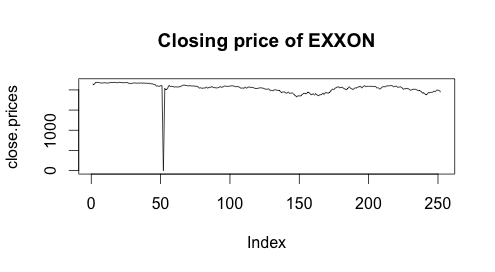
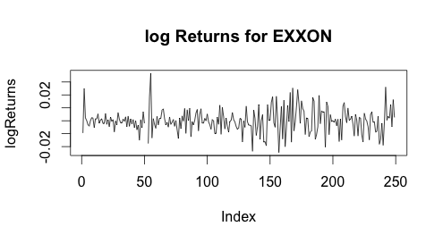

Black Scholes¶
A convenctional way to compare the price of each day is to compare the “log Returns”:
> close.prices <- as.numeric(gsub(",", "", xom$Close))
> length(close.prices)
[1] 252
>logReturns<-log(close.prices[2:250]/close.prices[1:249])
We need to transform our data from a comma separated number, e.g., 2,000 into 2000 before any data analysis.
Why log returns? We can compare the prices of two consecutive days in many ways, e.g., ratio, difference and what we did, log ratio. There are two reasons why we choose log ration.
Compare to difference, ratio is normalized. For example, we have no idea if the difference of 1 big enough. But ratio of 1.1 means the return of today has increased by 10% compared to that of yesterday.
log transformation can also makes skewed data more ‘normal’.

R manipulates data in a vectorized way, including addition, multiplication and so on.
We take a look at the logReturns:
 plot(logReturns,type="l",main="log Returns for EXXON") plot(close.prices,type="l",main="Closing price of EXXON")
- We can see that log Returns looks much better than the Close prices because of the normalization.
Now suppose we’re traders and and want to choose whether to buy an option or not. Recall Black Scholes formula: Let \(S_t\) be the price of a stock at time t. Popular statistical model:
\(Z_t = log \frac{S_{t + dt}}{S_t} \overset{iid}{\sim} N((\mu - \sigma^2/2)dt, \sigma^2 dt)\)
Great result by Black-Scholes and Merton: consider an option that gives the right to buy the stock S at time, for a price K. Then
\(C(S_0, T, K, r, \sigma) = S_0\Phi(d_+) - K\Phi(d_{\_})exp(-rT)\)
where
\(d_{\pm} = \frac{log(S_0/K) + (r \pm \frac{\sigma^2}{2})}{\sigma \sqrt{T}}\)
Here, we have K = $95, T = 3 months, r = 0.25% pear year, \(S_0 = 88.65\), What would you do?
First we need to estimate the variance \(\hat{\sigma}^2\):
sigmahat <- sqrt(var(logReturns[!is.infinite(logReturns)]) * 365) # make the unit in years
Notice there are some outliers, which we do not want, and thus removing. Here, for simplicity, we treat the close prices are daily data, that is, the time interval for any two consecutive is one day. In reality, some intervals are one day, some are three days because of weekends and holidays.
Use Black-Scholes:
> K <- 95 > T <- 3/12 # make the unit in years > r <- 0.25/100 > S0 <- 88.65 > > d1 <- (log(S0/K) + (r + sigmahat^2/2) * T)/(sigmahat * sqrt(T)) > d2 <- (log(S0/K) + (r - sigmahat^2/2) * T)/(sigmahat * sqrt(T)) > > C <- S0 * pnorm(d1) - K * pnorm(d2) * exp(-r * T) > C [1] 1.011341
Use the delta method to assess the variablility of this estimator. Suppose that \(\hat{\sigma} \sim N(\sigma, D^2)\), with D known. We fix other quantities and let:
\(g(\sigma) = C(S_0, T, K, r, \sigma)\)
Then by delta method, we have:
\(g(\hat{\sigma}) \sim N(g(\sigma), D^2[\frac{\partial}{\partial \sigma} g(\sigma)]^2)\)